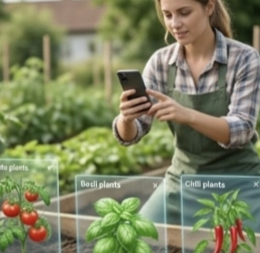
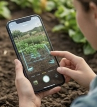
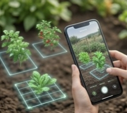
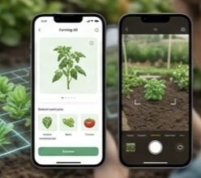

The prototype demonstrates how users interact with the AgriShe AR application through a simple mobile interface. Each screen is designed to make farming easier, more visual and more user friendly.

Users can browse available crops and choose the plant they want to preview in their farming space.

The mobile camera scans the available land and prepares the environment for AR visualization.

The selected plant appears virtually on the screen so users can view spacing and arrangement.

The application provides care tips, watering reminders and maintenance suggestions.